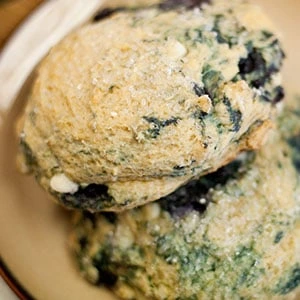

Welcome to Great Harvest Grand Rapids!
Enjoy our freshly baked breads, wholesome goodies, and satisfying sandwiches.
Our Story
The original Great Harvest was founded with a passion for baking and a commitment to quality, they have been serving communities across the nation for years.
We're excited to soon bring our fresh, handcrafted breads and delicious treats to Grand Rapids! Our products will be made with high-quality, locally-sourced ingredients and baked fresh daily.
What We Offer

At Great Harvest GR, we offer a wide range of freshly baked goods, including:
- Artisan Breads: Sourdough, whole wheat, and specialty loaves.
- Sandwiches: Delicious, made-to-order sandwiches with fresh ingredients.
- Sweets: Homemade cookies, muffins, and pastries.
- Catering: Custom orders for events, meetings, and gatherings.
All of our products are crafted with care to ensure the highest quality and flavor.
Stay Updated!
Want to be the first to know when we open our doors? Sign up for our newsletter to receive updates on our grand opening, special promotions, and new menu items!
Sign Up for Updates